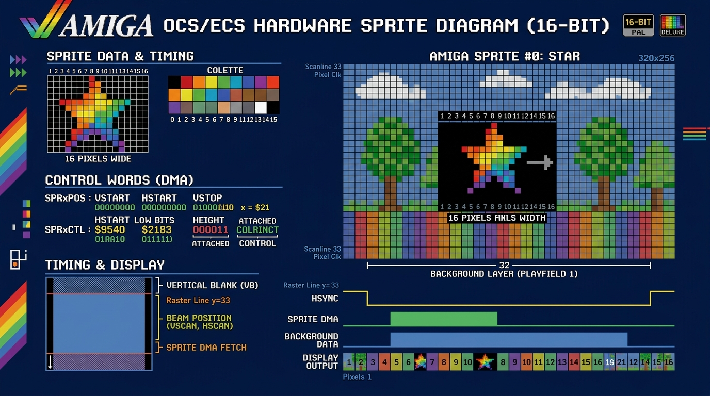

Basic Sprite Animation
An introduction to using hardware sprites on the Amiga. Learn how to define sprite data, position sprites, and create simple animations. The Amiga’s hardware sprites were a game-changer, allowing for fast, smooth-moving objects without needing to redraw the background (a process managed by the Blitter!).
What is a Hardware Sprite?
A hardware sprite is a separate, small graphical object that the Amiga’s video hardware can display on top of the normal background screen. The Amiga has 8 hardware sprites, each 16 pixels wide and any height. They have their own color palettes and their positions can be updated independently of the main screen, making them perfect for characters, bullets, and cursors.

What are OCS and ECS?
The Amiga’s custom architecture evolved across several hardware generations, starting with OCS and advancing to ECS:
- OCS (Original Chip Set): Found in early classic Amigas (A1000, A500, A2000). Powered by three custom coprocessors—Agnus (DMA & Copper controller), Denise (display & color generator), and Paula (audio & I/O). OCS supports up to 1 MB of Chip RAM, 32 displayable colors from a 4,096 color palette, HAM-6 mode, and 8 independent hardware sprites.
- ECS (Enhanced Chip Set): Introduced with the Amiga 3000, A500+, and A600. Upgraded to Super Agnus (supporting up to 2 MB of Chip RAM) and Super Denise (enabling 640x480 Productivity display modes, Extra-HalfBrite across all models, and flexible video timing).
Both OCS and ECS handle hardware sprites identically: 8 dedicated hardware DMA channels fetch 16-pixel wide sprite data directly from Chip RAM during horizontal scanlines, overlaying graphics without CPU overhead.

Click diagram to expand / view full sizeHow Animation Works: The Vertical Blank
So how do we make a sprite move? The key to smooth animation on the Amiga is timing. We need to change the sprite’s position at a consistent rate. The perfect time to do this is during the “vertical blank” period—the brief moment after the video beam has finished drawing the last line of the screen and before it jumps back to the top to start drawing the next frame.
By setting up a Level 3 Interrupt, we can tell the Amiga to run a small piece of our code automatically at the start of every vertical blank. This code will handle updating the sprite’s horizontal position, making it move smoothly from side to side.
Animated Hardware Sprite in Assembly
The Complete Code:
;-----------------------------------------------------
; anim_sprite.asm
; A complete, ANIMATED Hardware Sprite example
; Takes over the system and moves a sprite using a
; vertical blank interrupt.
;-----------------------------------------------------
CUSTOM equ $DFF000
INTENA equ $09A ; Interrupt Enable
INTREQ equ $09C ; Interrupt Request
DMACON equ $096
SPR0PTH equ $120 ; Sprite 0 pointer HIGH
SPR0PTL equ $122 ; Sprite 0 pointer LOW
SPR0POS equ $140 ; Sprite 0 Position
SPR0CTL equ $142 ; Sprite 0 Control
SPRITE0_PAL1 equ $1A2 ; Sprite palette color 1
SPRITE0_PAL2 equ $1A4 ; Sprite palette color 2
SPRITE0_PAL3 equ $1A6 ; Sprite palette color 3
LVL3_INT_VECTOR equ $6C ; Level 3 interrupt vector (CPU address $0000006C)
SECTION code,CODE
; --- Program Start ---
start:
lea CUSTOM,a5
; --- Save old interrupt vector and disable interrupts ---
move.l LVL3_INT_VECTOR.w,old_int_vector
move.w #$7FFF,INTENA(a5) ; Disable all interrupts
; --- Wait for vertical blank to safely take over ---
.waitvb:
move.l $4(a5),d0 ; Read VPOSR ($DFF004) & VHPOSR ($DFF006) together
and.l #$0001FF00,d0 ; Mask 9-bit vertical raster line (V8-V0)
cmp.l #$00002C00,d0 ; Wait until vertical line $2C (44)
bne.s .waitvb
; --- Install our new VBlank interrupt ---
lea vblank_interrupt(pc),a0
move.l a0,LVL3_INT_VECTOR.w
; --- Point the hardware to our sprite data ---
lea sprite_data,a0
move.l a0,SPR0PTH(a5) ; Pointer needs 32-bit access
; --- Set sprite colors ---
move.w #$0F80,SPRITE0_PAL1(a5) ; Red
move.w #$0FF0,SPRITE0_PAL2(a5) ; Yellow
move.w #$0FFF,SPRITE0_PAL3(a5) ; White
; --- Enable DMA and VBlank Interrupt ---
move.w #$8100,DMACON(a5) ; Enable DMA Master and Sprites
move.w #$C020,INTENA(a5) ; Enable Master and VBlank Interrupt
forever_loop:
btst #6,$BFE001 ; Check for left mouse click
bne.s forever_loop
; --- Exit gracefully ---
move.w #$0020,INTENA(a5) ; Disable VBlank interrupt
move.l old_int_vector,LVL3_INT_VECTOR.w ; Restore old interrupt vector
move.w #$0100,DMACON(a5) ; Disable Sprite DMA
rts
; --- Vertical Blank Interrupt Handler ---
vblank_interrupt:
movem.l d0-d1/a0-a1,-(sp) ; Save registers we are about to use
lea CUSTOM,a5
; --- Reload sprite pointer (prevents OS copper override) ---
lea sprite_data,a0
move.l a0,SPR0PTH(a5)
; --- Animation logic ---
move.w sprite_x(pc),d0
move.w sprite_dir(pc),d1
add.w d1,d0
; Check boundaries and reverse direction
cmp.w #$D0,d0 ; Right edge
bge.s .reverse
cmp.w #$40,d0 ; Left edge
ble.s .reverse
bra.s .no_reverse
.reverse:
neg.w d1
move.w d1,sprite_dir
.no_reverse:
move.w d0,sprite_x ; Store new position
; --- Update sprite hardware registers ---
; SPR0POS: VSTART in bits 15-8, HSTART (X >> 1) in bits 7-0
move.w #$64,d1 ; Vertical start position = 100
lsl.w #8,d1
move.w d0,d0
lsr.w #1,d0 ; HSTART = X >> 1
or.b d0,d1
move.w d1,SPR0POS(a5)
; SPR0CTL: VSTOP in bits 15-8, bit 0 = H0
move.w #$C8,d1 ; Vertical stop position = 200
lsl.w #8,d1
move.w sprite_x(pc),d0
andi.w #1,d0 ; Lowest bit of X (H0)
or.b d0,d1
move.w d1,SPR0CTL(a5)
; --- Acknowledge the interrupt and restore registers ---
move.w #$0020,INTREQ(a5) ; Acknowledge VBlank interrupt
move.w #$0020,INTREQ(a5) ; Acknowledge again (hardware quirk)
movem.l (sp)+,d0-d1/a0-a1 ; Restore registers
rte ; Return from Exception
old_int_vector: dc.l 0
sprite_x: dc.w $80 ; Initial horizontal position
sprite_dir: dc.w 1 ; Initial direction (1 = right, -1 = left)
; --- Sprite Data Section (MUST BE IN CHIP RAM) ---
SECTION sprite_chip,DATA_C
sprite_data:
; Header words set dynamically by hardware / registers
dc.w $0000, $0000
; Image Data (16 lines of a simple shape)
dc.w $0180, $0180, $03C0, $03C0
dc.w $07E0, $07E0, $0FF0, $0FF0
dc.w $1FF8, $1FF8, $3FFC, $3FFC
dc.w $7FFE, $7FFE, $FFFF, $FFFF
dc.w $FFFF, $FFFF, $7FFE, $7FFE
dc.w $3FFC, $3FFC, $1FF8, $1FF8
dc.w $0FF0, $0FF0, $07E0, $07E0
dc.w $03C0, $03C0, $0180, $0180
; End of sprite data
dc.w $0000, $0000
How to Run in Amiga Playground
- Copy the Code: Click the Copy button on the code block above to copy the assembly code to your clipboard.
- Open Amiga Playground: Launch Amiga Playground on your Mac and create or open a 68k Assembly document.
- Paste & Run: Paste the code into the source editor and press Cmd + R (or click Build & Run).
- See the Result: Amiga Playground will compile the source code with
vasmand run the emulator automatically. You should see a multi-colored sprite gliding back and forth across the screen! You can click the left mouse button to exit cleanly.
How to Compile and Run with vasm
- Save the Code: Save the complete code above into a file named
anim_sprite.asm. - Assemble: Open your Terminal, navigate to the folder where you saved the file, and run:
vasmm68k_mot -Fhunk -o anim_sprite anim_sprite.asm - Set up Emulator: In your emulator (vAmiga or FS-UAE), mount the folder containing your new
anim_spriteexecutable as a hard drive (e.g., asDH0:with volume labelWork). - Run in Emulator: Boot your emulated Amiga into Workbench. Open the
Workdrive on the desktop, then open theShellorCLI. Typeanim_spriteand press Enter. - See the Result: A multi-colored sprite will move smoothly back and forth across the screen. Click the left mouse button to exit cleanly back to Workbench.